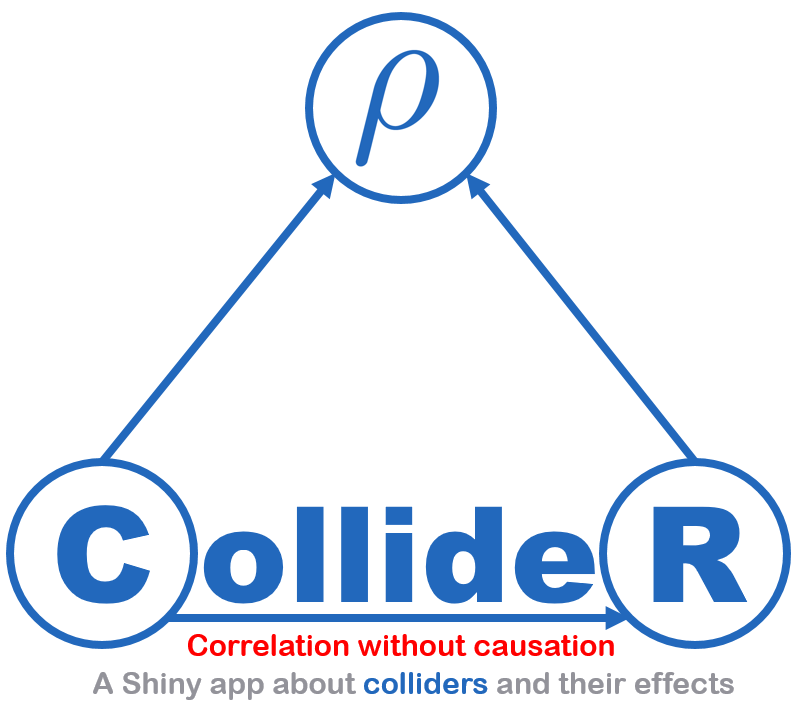
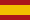

<div id="top"></div>
<a class="skip-link" href="#main">Skip to content</a>
<header class="site-header"><div class="nav-wrap">
<a class="brand" href="../../index.html" aria-label="Causality Lab · Home"><span class="brand-wordmark" aria-hidden="true"><span class="brand-name">Causality<span>Lab</span></span><span class="ugr-affiliation"></span></span></a>
<button class="menu-toggle" aria-controls="main-nav" aria-expanded="false" aria-label="Open menu"><span></span><span></span></button>
<nav id="main-nav" aria-label="Main navigation"><a href="../../index.html#about">About</a><a href="../../index.html#research">Research</a><a href="../../index.html#resources">Training</a><a href="../../index.html#publications">Publications</a><a href="../../index.html#talks">Talks</a><a href="../../index.html#software">Software</a><a href="../../index.html#books">Books</a><a href="../../index.html#team" aria-current="page">Team</a><a class="nav-contact" href="../../index.html#contact">Contact</a><div class="language-switch" role="group" aria-label="Choose language"><a class="language-option" href="../../es/team/__SLUG__/index.html" lang="es" hreflang="es" aria-label="Switch to Spanish" title="Español"></a><span class="language-option is-current" lang="en" aria-current="page" aria-label="English, current language" title="English"></span></div></nav>
</div></header>
